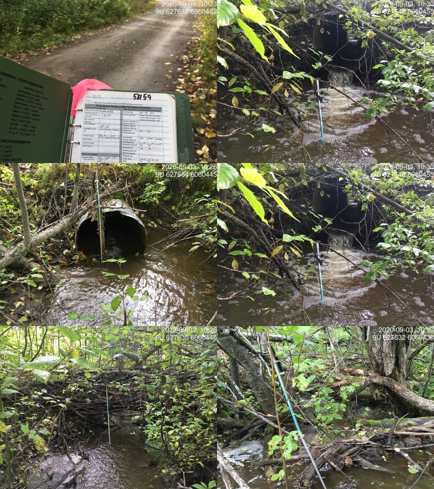

Appendix - 58159 - McDowell Creek
Site Location
PSCIS crossing 58159 is located on McDowell Creek on the Woodmere Nursery Road accessed from Highway 16 immediately south of Telkwa, BC. The Woodmere Nursery Road is a private road owned by the Woodmere Nursery. At the time of field surveys it was used to access a newly constructed agricultural facility and by nursery operations to access a waste storage/burn pile area.
Background
McDowell Creek drains McDowell Lake (35ha), Dorsay Lake (4ha) and one other unnamed lake (9ha) flowing from McDowell Lake in a south then west direction for approximately 9km to the confluence with the Bulkley River. At crossing 58159, McDowell Creek is a third order stream with a watershed area upstream of the crossing of approximately 15.9km2. The elevation of the watershed ranges from a maximum of 1000 to 520m at PSCIS crossing 58159. McDowell Creek is known to contain coho and rainbow trout upstream of the subject culvert (MoE 2020a). There are numerous stream crossing structures located on McDowell Creek upstream of 58159 including crossings on Highway 16, an unnamed road 300m upstream of the highway, Woodmere Road and others.
PSCIS stream crossings 58159 and 58158 were rated as high priorities for follow up by both Irvine (2018) and Smith (2018) due to significant quantities of upstream habitat suitable for salmonid rearing. A map of the watershed is provided in map attachment 093L.118.
Stream Characteristics at Crossing
At the time of the survey, the culvert was un-embedded, non-backwatered and considered a barrier to upstream fish passage. The pipe was 1m in diameter with a pipe length of 14m, a culvert slope of 3%, a stream width ratio of 2.3 and an outlet drop of 0.36m (Table 5.3). Water temperature was 11\(^\circ\)C, pH was 8.2 and conductivity was 324uS/cm.
Stream Characteristics Downstream
The stream was surveyed downstream from the culvert for 135m (Figures 5.6 - 5.7). Overall, total cover amount was rated as abundant with large woody debris dominant. Cover was also present as small woody debris, undercut banks, overhanging vegetation, and instream vegetation (Table 5.5). The average channel width was 2.2m, the average wetted width was 1.7m and the average gradient was 3.8%. The dominant substrate was cobbles with gravels subdominant. Habitat was rated as moderate as it was considered an important migration corridor with moderate value habitat for fry/juvenile salmonid rearing.
Stream Characteristics Upstream
The stream was surveyed upstream from 58159 for 440m (Figures 5.8 - 5.9). Within the area surveyed, total cover amount was rated as abundant with large woody debris dominant. Cover was also present as small woody debris, undercut banks, overhanging vegetation, and instream vegetation (Table 5.5). The average channel width was 2.2m, the average wetted width was 1.8m and the average gradient was 2%. Habitat value was rated as moderate for salmonid rearing and spawning.
PSCIS culvert 58158 was documented on McDowell Creek, 500m upstream on Highway 16. At the time of the survey the culvert had been newly replaced with a baffled structure embedded with a natural cobble and gravel substrates. Although ranked as a barrier to upstream fish passage using the provincial metric the crossing is likely not a barrier during most flows for adult anadromous salmon and fluvial salmonids migrating upstream from the Bulkley River. The pipe was 2.5m in diameter with a pipe length of 53m, a culvert slope of 5.5%, a stream width ratio of 1 and an outlet drop of 0.36m (Table 5.4).
PSCIS crossing 123544, located on an unnamed road approximately 300m upstream of Highway 16 has been documented as a barrier in the PSCIS system. The culvert is documented as 30m long, with a 1m diameter, a slope of 3.5% and an outlet drop of 0.3m. The culvert is noted as not embedded and not backwatered.
Table 5.6 presents preliminary fish passage modelling data for crossing 58159 with spawning and rearing habitat estimated for chinook, coho, sockeye and steelhead. Modelled estimates of the total length of salmon or steelhead habitat upstream of the crossing before potential barriers are 0.4km of potential spawning habitat and 0.4km of potential rearing habitat.
Fish Sampling
To assess potential impacts of the culvert on fisheries values in the stream, electrofishing was conducted upstream and downstream of the crossing. A total of 9 coho were captured downstream with 1 coho captured upstream. Although there is only moderate confidence in their identification, 19 fish captured were identified as chinook. With the exception of one coho, only rainbow trout (19 fish) were captured upstream. Sampling results are summarized in Tables 5.7 - 5.8 and Figure 5.5.
Structure Remediation and Cost Estimate
Structure replacement with a bridge (10m span) is recommended to provide access to the habitat located upstream of PSCIS crossing 58159. The cost of the work is estimated at $300,000 for a cost benefit of 2.6 linear m/$1000 and 5.7m2/$1000.
Conclusion
There is 0.8km of habitat upstream of crossing 58159 to PSCIS crossing 123544 located on an unnamed road approximately 300m upstream of Highway 16. Habitat in this area was rated as moderate value for salmonid rearing/spawning. Woodmere Nursery Road is on private land owned by the Woodmere Nursury. The crossing was ranked as a high priority for proceeding to design for replacement. Although remediation of fish passage at 58159 is considered beneficial, detailed habitat confirmation assessments of upstream culverts (PSCIS 123544) could be pursued to scope for additional potential habitat gains possible within the same system.
| Location and Stream Data |
|
Crossing Characteristics | – |
|---|---|---|---|
| Date | 2020-09-03 | Crossing Sub Type | Round Culvert |
| PSCIS ID | 58159 | Diameter (m) | 1 |
| External ID | – | Length (m) | 14 |
| Crew | KP, AI | Embedded | No |
| UTM Zone | 9 | Depth Embedded (m) | – |
| Easting | 627643 | Resemble Channel | No |
| Northing | 6060449 | Backwatered | No |
| Stream | McDowell Creek | Percent Backwatered | – |
| Road | Woodmere Nursery Road | Fill Depth (m) | 0.75 |
| Road Tenure | MoTi local | Outlet Drop (m) | 0.36 |
| Channel Width (m) | 2.3 | Outlet Pool Depth (m) | 0.8 |
| Stream Slope (%) | 3.8 | Inlet Drop | Yes |
| Beaver Activity | No | Slope (%) | 3 |
| Habitat Value | Medium | Valley Fill | Deep Fill |
| Final score | 36 | Barrier Result | Barrier |
| Fix type | Replace with New Open Bottom Structure | Fix Span / Diameter | 10 |
| Photos: From top left clockwise: Road/Site Card, Barrel, Outlet, Downstream, Upstream, Inlet. | |||
| Comments: Stream flows through the Woodmere Nursury from small culvert on burn pile access road to the Highway. Electrofishing conducted. Abundant cover available primarily as overhanging vegetation and cobbles. Upstream culvert under Highway 16 has been recently replaced by horizontal drilling. Baffles at upstream crossing. Coho fry captured below the Highway crossing. |
| Location and Stream Data |
|
Crossing Characteristics | – |
|---|---|---|---|
| Date | 2020-09-03 | Crossing Sub Type | Round Culvert |
| PSCIS ID | 58158 | Diameter (m) | 2.5 |
| External ID | – | Length (m) | 53 |
| Crew | AI, KP | Embedded | Yes |
| UTM Zone | 9 | Depth Embedded (m) | 0.5 |
| Easting | 628044 | Resemble Channel | Yes |
| Northing | 6060527 | Backwatered | No |
| Stream | McDowell Creek | Percent Backwatered | – |
| Road | Highway 16 | Fill Depth (m) | 4 |
| Road Tenure | MoTi highway | Outlet Drop (m) | 0.36 |
| Channel Width (m) | 2.5 | Outlet Pool Depth (m) | 0.45 |
| Stream Slope (%) | 3 | Inlet Drop | Yes |
| Beaver Activity | No | Slope (%) | 5.5 |
| Habitat Value | High | Valley Fill | Deep Fill |
| Final score | 34 | Barrier Result | Barrier |
| Fix type | Replace with New Open Bottom Structure | Fix Span / Diameter | 13 |
Photos: From top left clockwise: Road/Site Card, Barrel, Outlet, Downstream, Upstream, Inlet.
|
|||
| Comments: New culvert horizontally drilled under highway in 2017. Structure has baffles made of oured concrete and boulders. Often deep pools up to 50cm before baffles. Baffles seem sarp and have potential to injure fish ascending? |
| Site | Location | Length Surveyed (m) | Channel Width (m) | Wetted Width (m) | Pool Depth (m) | Gradient (%) | Total Cover | Habitat Value |
|---|---|---|---|---|---|---|---|---|
| 58159 | Downstream | 135 | 2.2 | 1.7 | 0.2 | 3.8 | abundant | moderate |
| 58159 | Upstream | 440 | 2.2 | 1.8 | 0.4 | 2 | abundant | moderate |
| Habitat | Potential | Remediation Gain | Remediation Gain (%) |
|---|---|---|---|
| Salmon Network (km) | 9.4 | 0.4 | 4 |
| Salmon Lake Reservoir (ha) | 4.4 | 0.0 | 0 |
| Salmon Wetland (ha) | 0.0 | 0.0 | – |
| Steelhead Network (km) | 10.3 | 0.4 | 4 |
| Steelhead Lake Reservoir (ha) | 4.4 | 0.0 | 0 |
| Steelhead Wetland (ha) | 0.0 | 0.0 | – |
| CH Spawning (km) | 0.0 | 0.0 | – |
| CH Rearing (km) | 0.0 | 0.0 | – |
| CO Spawning (km) | 4.3 | 0.4 | 9 |
| CO Rearing (km) | 4.3 | 0.4 | 9 |
| CO Rearing (ha) | – | – | – |
| SK Spawning (km) | 0.0 | 0.0 | – |
| SK Rearing (km) | 0.0 | 0.0 | – |
| SK Rearing (ha) | – | – | – |
| ST Spawning (km) | 0.0 | 0.0 | – |
| ST Rearing (km) | 5.0 | 0.4 | 8 |
| All Spawning (km) | 4.3 | 0.4 | 9 |
| All Rearing (km) | 5.0 | 0.4 | 8 |
| All Spawning and Rearing (km) | 5.0 | 0.4 | 8 |
| * Model data is preliminary and subject to adjustments including incorporating area based estimates. | |||
| † Modelled rearing habitat estimates include linear lengths of centrelines within wetlands for coho and within lakes >100ha (multiplied by 1.5) for sockeye. | |||
| ‡ Remediation Gain is an estimate of the amount of habitat to be gained by providing access above the crossing. This assumes that all upstream habitat is currently unavailable and that all modelled unassessed crossings located upstream would prevent further passage. |
| Site | Location | Width (m) | Length (m) | Area (m2) | Effort (s) | Effort (s/m2) |
|---|---|---|---|---|---|---|
| 41 | Downstream | 2.00 | 5 | 10 | 71 | 7.1 |
| 42 | Downstream | 1.75 | 33 | 58 | 104 | 1.8 |
| 43 | Downstream | 1.63 | 47 | 77 | 176 | 2.3 |
| 44 | Downstream | 2.00 | 50 | 100 | 147 | 1.5 |
| 45 | Upstream | 1.90 | 23 | 44 | 107 | 2.4 |
| 46 | Upstream | 1.80 | 31 | 56 | 268 | 4.8 |
| 47 | Upstream | 1.80 | 26 | 47 | 144 | 3.1 |
| 48 | Upstream | 2.50 | 4 | 10 | 57 | 5.7 |
| Site | Location | Species | Fry | Parr | Juvenile | Adult |
|---|---|---|---|---|---|---|
| 41 | Downstream | CH | 30.0 | – | – | – |
| 42 | Downstream | CH | 1.7 | – | – | – |
| 43 | Downstream | CH | 3.9 | 1.3 | – | – |
| 44 | Downstream | CH | 8.0 | 3.0 | – | – |
| 43 | Downstream | CO | 5.2 | – | – | – |
| 44 | Downstream | CO | 5.0 | – | – | – |
| 48 | Upstream | CO | – | 10.0 | – | – |
| 41 | Downstream | RB | 70.0 | 20.0 | – | – |
| 42 | Downstream | RB | 24.1 | 1.7 | 3.4 | – |
| 43 | Downstream | RB | 10.4 | 3.9 | 3.9 | 1.3 |
| 44 | Downstream | RB | 13.0 | 5.0 | – | – |
| 45 | Upstream | RB | 9.1 | 2.3 | – | – |
| 46 | Upstream | RB | – | 3.6 | 5.4 | – |
| 47 | Upstream | RB | 4.3 | 2.1 | 2.1 | – |
| 48 | Upstream | RB | 40.0 | – | 10.0 | – |

Figure 5.5: Densities of fish captured (fish/100m2) during electrofishing upstream and downstream of PSCIS crossing 58159.
Figure 5.6: Typical habitat downstream of PSCIS crossing 58159.
Figure 5.7: Chinook captured downstream of PSCIS crossing 58159.
Figure 5.8: Typical habitat upstream of PSCIS crossing 58159.
Figure 5.9: Coho captured upstream of PSCIS crossing 58159.